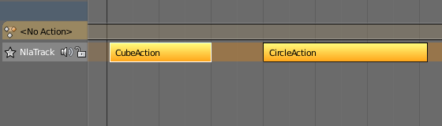
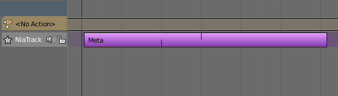
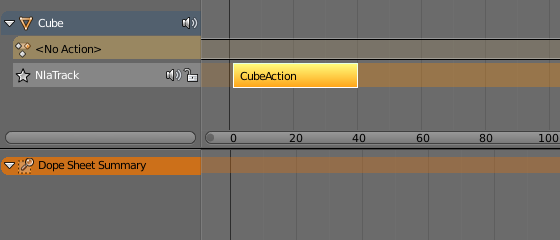
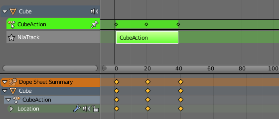

Смужки -- Strips¶
Типи -- Types¶
Існують чотири види смужок: Дія -- Action, Перехід -- Transition, Кліп Звуку -- Sound clip та Мета -- Meta.
Смужки Дій -- Action Strips¶
Смужка Дії -- Action Strip -- це контейнер ключкадрованих даних дії. Будь-яка дія, що використовується НЛА, спершу повинна бути перетворена в Смужку Дії. Це робиться клацком на кнопці «Опущення» -- Push Down, яка знаходиться на стежці. Альтернативно, ви можете додати цей вид у меню «Додання > Смужка Дії» -- .
Смужки Переходів -- Transition Strips¶
Переходи інтерполюють між Діями. Вони повинні розміщуватися між іншими смужками. Виділяйте дві або більше смужок на одній стежці та додавайте їх у меню «Додання > Перехід» -- .
Смужка Переходу -- Transition Strip.
Смужки Кліпів Звуку -- Sound Clip Strips¶
Керують, коли гучномовець відтворює звуковий кліп. «Додання > Кліп Звуку» -- .
Мета Смужки -- Meta Strips¶
Мета смужки групують смужки разом в єдине ціле, так що ви можете рухати їх як одне. Якщо вам треба пересунути багато смужок за раз, то ви можете групувати їх у Мета Смужку. Мета смужка може пересуватися та дублюватися, як звичайна смужка.
Орієнтир
| Menu: | |
|---|---|
| Hotkey: | Shift-G |

Утримуйте натисненою Shift для виділення двох або більше смужок. |

Комбінуйте їх в мета смужку. |
{kind=link}
{kind=link}
Мета смужка все ще вміщує утворювальні її смужки. Ви можете розгрупувати Мета смужку.
Орієнтир
| Menu: | |
|---|---|
| Hotkey: | Alt-G |
Редагування -- Editing¶
Почати Підправку Дій Смужок -- Start Tweaking Strips Actions¶
Орієнтир
| Menu: | |
|---|---|
| Hotkey: | Tab |
Вміст смужок Дій може бути редаговано, але ви повинні для цього перейти у режим підправки -- Tweak Mode. Ключкадри цієї дії можуть далі бути редаговані в Аркуші Експозицій -- Dope Sheet.

Смужка у режимі НЛА -- NLA. |

Смужка у режимі Підправки -- Tweak. |
{kind=link}
{kind=link}
Коли ви завершите редагування смужки, просто скористайтеся командою «Правка > Зупинити Підправку Дій Смужок» -- або натисніть Tab.
Почати Правку Запасеної Дії -- Start Editing Stashed Action¶
Орієнтир
| Menu: | |
|---|---|
| Hotkey: | Shift-Tab |
Це буде входити й виходити у режим Підправки -- Tweak Mode, як звичайно, але також це гарантуватиме, що дія може редагуватися в ізоляції (перемикаючи стежку НЛА так, що дія смужки стає, як «соло»). Це корисно для редагування запасених дій без втручання у решту стеку, стосу НЛА.
Дублювання -- Duplicate¶
Орієнтир
| Menu: | |
|---|---|
| Hotkey: | Shift-D |
Створює новий примірник виділених смужок з копією дії.
Пов'язане Дублювання -- Linked Duplicate¶
Орієнтир
| Menu: | |
|---|---|
| Hotkey: | Alt-D |
Вміст однієї смужки Дії може бути дубльовано у пов'язані примірники кілька разів. Для дублювання пов'язано іншої смужки, виділіть смужку та скористайтеся «Правка > Пов'язане Дублювання» -- . Це буде використовувати одну дію кількома смужками.
Тепер, коли будь-яка зі смужок підправляється, інші автоматично змінюватимуться також. Якщо смужка, інша ніж оригінал буде підправлятися, то оригінал забарвиться червоним.
Пов'язано дубльована смужка редагується.
Зробити Однокористувацьким -- Make Single User¶
Орієнтир
| Menu: | |
|---|---|
| Hotkey: | U |
Цей засіб гарантує, що виділена смужка буде використовувати копію дії, яка належатиме тільки їй і жодній з інших смужок.